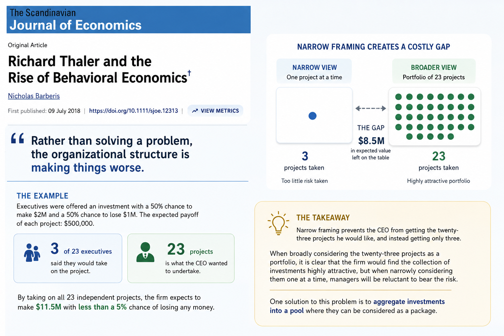
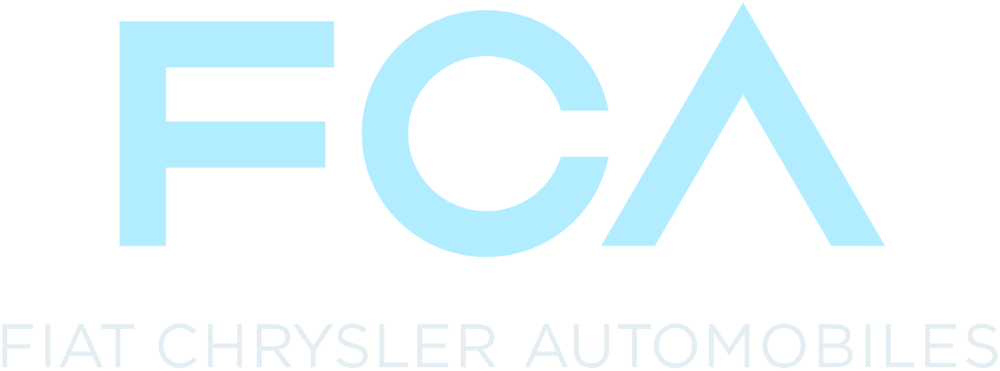

Top Negotiator: “This Is The Fastest Way To Restore Leverage Inside Your OEM”
Veteran buyer exposes the $1.7 Million resource strain conspiracy - and the 30-minute triage that drove a $3.7M contract savings (without internal firefighting or supply chain disruption)
⭐️⭐️⭐️⭐️⭐️ 10,000+ procurement professionals trained

I’m about to tick off every CEO, chairman, and shareholder in America.
Because what I’m about to share blames them for millions in lost revenue.
But I don’t care.
After seeing budget cuts averaging $1.7M per team…
After seeing negotiations ruined by vendor-CFO lunchtime deals…
After seeing procurement workloads go up by 50% in five years while they’ve become the office punching bag…
I discovered something that changed everything.
And if you’re reading this with a 12% supplier increase looming, four opinions from four departments, or a to-do list that’s 80% chasing adults for information and 20% actual decision-making…
The next 5 minutes could be the most important of your career.
My name is Ruth Shlossman…
I’ve been a procurement negotiator for 28 years.
I’ve worked with every industry, from tariff-hammered automotives to sole-sourced, ultra-regulated aerospace.
And I’m about to expose the cowardly precedents massive consultancies use to turn procurement teams into organizational scapegoats.
But first, let me tell you about the day that everything changed…
The day everything changed…
It's 12:47 PM on a Tuesday.
I open my laptop to my client, a VP Procurement at a global automotive OEM, red-eyed.
Not tired, red. Furious, red.
The kind of raw, primal hue that makes your stomach drop.
He's deep-breathing, head in his hands, his whole body shaking.
“I can’t do this anymore,” he whispers, “I can’t work like this.”
His supplier has closed their site.
They're doubling their price.
It's a critical, sole-sourced part, with no short-term alternative supplier, dictated in the kind of email that makes your blood boil and steam come out of your ears.
And I stare back.
Frozen.
A negotiation strategist who's stumped.
My mind's racing through everything my 28 years of training has taught me. BAM. BATNA. ZOPA. Probing. Counter-Offers. Concessions. Triggers. Yes, if. Anchoring.
But I hit a sobering realization...
None of it matters.
The issue isn't strategy.
It's internal:
- His CFO? Rejected the 100% increase outright. Told him to do his job as VP procurement or explain his savings target to the Board.
- Legal? Outraged, quoting Section 4, Clause B stating 180 days’ prior notice before site closure. Preparing a cease-and-desist.
- Stakeholders and engineering? Wanted to pay the $1.8M ransom. Terrified that line stoppage would cost $15,000/minute and a new line would take 8–12 months to validate.
That day, something in me snapped.
I wasn’t going to watch a professional who’d done nothing wrong get ripped apart for this.
I wasn’t going to allow procurement to become the scapegoat again.
There had to be another way.
exposing the system rigged against you
For the next 3 days, I live like a person possessed.
I devour every study. Call colleagues in Harvard. Meet with veteran procurement directors. Comb through 1,500+ of my own case files, worksheets and frameworks.
And what I realize makes me want to punch a hole through my computer screen.
Here it is:
The entire OEM corporate structure is rigged against you.
When supply chains break and tariffs hit, the executives never fix the underlying issue.
Instead they use procurement as duct tape, expecting you to hold together a billion-dollar operation with zero authority and the budget of a college Football team.
Point being:
95% of today's procurement stress has NOTHING to do with deadlines, price increases, or even tariffs.
The REAL cause is something so obvious, I kicked myself for missing it all these years.
It explains exactly why your team is stuck in a game of procurement Whac-A-Mole.
It explains why the "fires" only seem to get bigger and more urgent every day.
Your OEM is trapped in a Defensibility Trap.
The real root cause of procurement pressure
Picture your OEM like a Jenga tower.
The business is the tower. Employees are the individual blocks.
While the company is small, the tower is agile. It grows rapidly, blocks shift dynamically without wobbling, and market velocity outpaces fear.
But hit a headcount of 500+, and everything changes.
The tower grows massive, top-heavy, and precarious. Every move becomes sluggish and shaky. To prevent a collapse, the organization spawns a culture of bureaucratic cowardice. Suddenly, managers care far less about saving company money than they do about a "paper trail" to cover their backs.
Ergo, the death of procurement's greatest asset:
Intuition.
It’s the equivalent of telling an elite detective he can only investigate a murder if the killer left a signed confession.
If an informant whispers a golden tip in an alleyway, he can't touch it, because there is no approved form.
His intuition is choked off like a garden hose under a truck tire.
You know what grinds my gears?
The executives KNOW this.
They’ve known it since 1997, when behavioral economist Richard Thaler ran his famous experiment with 23 division executives. He offered them a project with a 50% chance to gain $2 million, and a 50% chance to lose $1 million (a positive net gain of $500,000 for the firm).
Out of the 23 executives, only 3 agreed to take the risk on.
The Defensibility Trap strikes.

But here’s the kicker…
There’s no money in fixing it.
Why?
When a win yields a modest bonus but a single loss gets you fired, the rational choice is paralysis.
You can’t risk-assess inaction.
You can’t put intuition into an Ops Manual.
So execs hire consultancies to invent “Best Practice” as a shield.
Which puts procurement on the blame wheel:
Unexpected problem arises → Strip procurement of intuition → Enforce rigid rules → Scapegoat you when those rules cause failures → Lock the company into incremental gains → Repeat until the OEM has no strategic room to move.
The system optimizes for survival over growth, squeezing out the very margins and agility the business needs to survive.
In a volatile market, that is a death sentence. Nothing but institutional suicide disguised as risk management.
It’s genius, really.
If you’re a scared executive who can’t afford to take a measured risk.
The 30-minute miracle hiding in plain sight
Remember that fed up VP of procurement?
Three weeks after we spoke, he saved $800,000 on that supplier increase.
No arguing. No blaming. No convincing.
Truly org-defining.
Just 30 minutes of something so stupidly simple, I’m embarrassed it took me so long to figure out.
To fix your OEM, you need to do THREE THINGS simultaneously:
RESPONSIBILITY - Step into the real role of procurement: The organizational diplomat
ALIGN - Rally all departments to your strategy
SYSTEMIZE - Lead everyone to follow the new system
That’s how million-dollar savings become commonplace.
Miss even ONE of these steps, and you’re back at rubber stamp procurement. Fighting for scraps with competitors all doing the same thing as you.
That’s why cutting costs doesn’t work. (No budget)
That’s why AI implementation doesn’t work. (No execution)
That’s why switching supply chains doesn’t work. (No time)
You need all three. At the same time. In the right sequence.
A Procurement Diplomat Doctrine.
And that’s exactly what I figured out how to do.
This breakthrough is pissing off the consultancy firms
After our VP’s miracle saving, word spread fast.
A purchasing program manager — from a multinational automotive OEM — emailed me at 8am.
“Whatever you did for ____… we need it for 450 global procurement hires. ASAP”
This company was also in a gruelling, multi-round negotiation process. Supplier stonewalling. Different departments citing different concerns.
One session with my new method, they didn’t cave.
They held their ground through 7 brutal rounds of negotiation.
Result?
$3.7M saved.
From a single contract.
More importantly, the function of procurement changed.
Over the next 2 months, something interesting happened.
The execs at that OEM started talking. A VP of Operations mentioned it at a conference. A CFO brought it up during a private dinner.
My calendar started getting booked up.
I was getting calls from Directors who couldn't get their engineers to agree on a spec. Buyers who were ready to quit because every request was a 6 PM emergency. Managers taking the blame for tariffs they couldn't control.
I started walking them all through the exact same system.
Every. Single. One. Got. Their. Leverage. Back.
Not "improved communication." Not "learned to live with the chaos."
ACTUALLY SOLVED.
That’s when the pushback started.
Why conventional training fails in 2026
I have a lot of respect for academic procurement theory.
The frameworks are brilliant.
The Big 4 supply chain audits look beautiful on a PowerPoint slide.
But there is a massive problem with corporate consulting firms.
A corporate trainer can easily stand in a conference room and tell your buyers to "calculate their BATNA" or use the "Kraljic Matrix."
It's all perfect in theory.
But when the wheels come off, would your team know what to do?
The consultancies and certification boards want to sell you an 8 week training program.
They want to bill you 250,000 dollars for a risk audit.
They want to keep you hooked on “best practices”.
I’ve created something that could make their entire business model obsolete:
- Fixes the ROOT CAUSE of low leverage (not just symptoms)
- Starts to work after a 30-minute conversation (not weeks of engagements)
- Costs you nothing at all to see it in action (not thousands in deposits before you’re bought in)
- Solves procurement pressure permanently (not with some $200/month subscription)
Introducing the doctrine that actually fixes low leverage
It’s called The Procurement Diplomat.
And it’s THE single method on Earth that restores leverage for procurement for good:
HIPPO DIPLOMATIC BRIEF that puts the reins of the company firmly back in procurement hands.
DRIVER MAPPING that decodes, layer-by-layer, internal and external stakeholder interests.
KNIGHT’S MOVES that turn even the toughest negotiations on their head.
All three. Synchronized.
You literally just let your team follow the framework, flex the muscle memory they've gained, and let 28 years of Fortune 500 battle-testing do the work.
No firefighting. No getting blamed. No overthinking.
Just your department finally getting what it’s been screaming for:
Authority. Alignment. Respect.
The results that are shocking executives





In the last few years, we’ve created over 10,000 Procurement Diplomats.
The results?
- A team prevented a price-doubling trap by Driver Mapping a supplier’s ego needs
- Another saved over $500,000 in contract spend
- Another saved $80,000 per year
But my favorite statistic?
The absolute ALIGNMENT from the OEM to procurement’s authority.
I want to be clear:
This is not about dominance.
It’s about stepping into the role you trained for for 15 years.
For the good of the company (and your team's mental health).
Check out what real leaders are saying:
David Peck - Head of Supply Chain: "Hundreds of employees trained… both sales and procurement functions improved outcomes by a large margin. ROI in Ruth is extremely high."
Ezra Wanetik - Solutions Architect: "After Ruth's coaching session, I was no longer nervous about negotiating. She showed me a logical, easy to follow system. I went from nervous to confident. Negotiating is more creative than I thought."
Tony Reynolds - Procurement Transformation Consultant: "Ruth offers a unique perspective… her training is better than dozens of other courses I've attended. The ROI was rapid, my team's approach changed immediately, and the results followed."
Global Procurement Lead: "I’ve been able to garner support from Engineering on purchasing initiatives by considering the engineers as stakeholders and thinking about what it is that they want out of our interactions. I then was able to use that knowledge to foster quicker, more effective communication with Engineering and other functional groups."
Greg Wurgler - Electrical Components International: "I have been using ‘Yes, if’ to the point of coaching leaders a level above me to not slam down a difficult customer request with a ‘Hell no’ which was the temptation of my colleagues… Best case is we get the full ‘yes, if’ agreed to… and that would add a couple million award on annual revenue basis."
The price that's causing the consultancies to panic
Let me show you what fixing your procurement department REALLY costs in America:
The Academic Route:
Sending a 10-person team to an Ivy League seminar
$3,500 per head registration fee
$1,200 per head for flights and hotels
1 week out of the office for the entire department
Total: $47,000 (And they come back quoting theory that flops when tested).
The Big Consultancy Route:
Initial scope and discovery phase: $50,000
Monthly retainer for 4 consultants: $80,000
6-month minimum engagement
Total: $530,000 minimum (For a 100-page PowerPoint with info you already know).
The "Do Nothing" Route:
25% tariff on imports.
25% on a $10M contract = $2,500,000 in pure lost margin.
50% increased workload for your team
25% chance you miss your savings target
Total: Millions in lost margin and months of stress
The consultancies LOVE these options.
Know why?
Because you have to keep coming back.
More consulting = more money. Failed negotiation = more consulting. Consultant-implemented red tape = less intuitive decision-making.
It’s a goldmine built on your frustration.
But here’s what really pisses them off…
The Procurement Diplomat should cost $100,000+
That’s how much I charge for corporate engagements.
Because ROI is minimum 5–10x that number on the very next deal.
But I didn't build this to just hand it to the Fortune 50.
I built it because I watched that VP of Procurement shaking at his desk.
Because that automotive procurement team was 7 rounds away from $3.7M loss without even realizing it.
Because a supplier was doubling their price based on nothing.
So here’s the deal:
I am not asking you for $50,000 today. I am not even asking you for $12,500.
I simply want to prove that this works on your absolute worst, most toxic deal.
THE "IN YOUR FACE" TO THE CONSULTANCY INDUSTRY free DEAL TRIAGE
Cost: $0.
That’s right. Free.
Why would I do this?
Because I know human nature.
I know what happens on a call.
I show you how to untangle your internal politics.
How to get 6-fig savings on your live deal.
You’ll want me to train your entire department.
But I prove my value first.
Procurement budgets are tight enough as they are right now without asking you to trust a total stranger — regardless of how many OEM leaders are singing her praises.
But here's the catch (and it's a big one)
I accept only 4 OEMs per month.
Because right now, I personally conduct your triage.
It is free.
The ROI is immediate.
But I cannot promise this will last forever.
In fact, I cannot keep up with this demand alone.
That’s why I have experts being trained as we speak.
Very soon, they will be conducting these calls, not me.
So if you want direct access to me, this is your one and only chance.
And a gentle reminder…
Every minute you wait is another minute you’re:
- Letting your OEM scapegoat your team
- Watching your suppliers eat your margin
- Living in unnecessary stress
While the solution is sitting right here for FREE.
My “no regret” guarantee
Look, I get it.
You’ve been burned before.
Sat through webinars and pitches that wasted your time.
So here’s my promise:
Book the triage.
But you MUST bring one live, hostile deal.
Listen to my strategy with open ears.
It may sound counterintuitive.
It may go against “Best Practice”.
But if you don’t end the call thinking, “Holy crap, I think this could ACTUALLY work”…
You can leave without so much as a goodbye.
No questions asked. No hard feelings. No sales follow-up nonsense.
Why am I so confident?
Because in 28 years and 10,000 people trained in our paid corporate workshops, our refund rate is 0.1%.
That was TEN people out of that ten thousand.
And that was because that was a single account whose entire acquisition division got restructured on a random day in July.
The choice that will define your decade
Right now, you’re at a crossroads.
Path #1: Keep Doing What You’re Doing
Keep playing firefighter. Keep accepting 12% price hikes because operations is panicking. Keep fighting with engineering. Keep missing your savings targets. Keep being the corporate scapegoat.
Keep letting your company decide what procurement does.
Path #2: Try Something That Actually Works
Spend half your lunch break with a Fortune 500 negotiator. Get a strategy that’s helped procurement teams save $500k–$3.7M on a single deal. Fix the ROOT CAUSE instead of chasing stakeholders. Wake up tomorrow with leverage instead of dread.
Create the change you know procurement deserves.
The choice seems pretty obvious to me.
Here's exactly what to do next
Click the big gold button below that says “Check Availability Now →”
- Enter your name and email (so we know what to call you when we meet)
- Put in 4 deal variables (our instant calculation will point you in the right direction)
- Unlock Ruth’s personal calendar
- Select a 30-minute slot that works for you
- Click the “Add to Calendar” button (and share your unique Thank You page with anyone else that needs to be looped in)
But whatever you do, don't close this page thinking "I'll book it later."
Later doesn’t exist when your team is struggling.
Later is another supplier price increase.
Later is another stressful internal meeting.
Later is the 4 calls getting booked up and my personal access revoked.
Your procurement team has taken the blame long enough.
Click below and let's end this nightmare.
With respect, Ruth Shlossman Creator of The Procurement Diplomat Doctrine